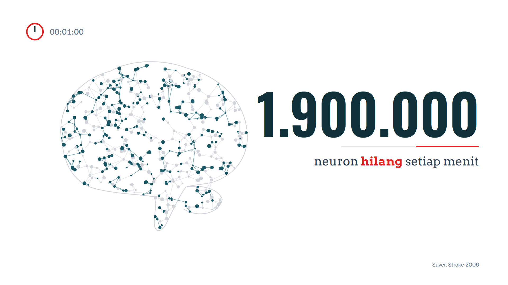
Siluet otak dari ~400 titik neuron yang saling tersambung; penghitung naik ke 1.900.000 sementara neuron padam satu per satu.
“Setiap menit stroke tidak ditangani, otak kehilangan sekitar satu koma sembilan juta neuron.”
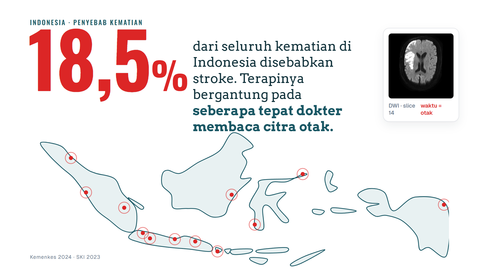
Peta kepulauan Indonesia tergambar garis demi garis; angka 18,5% menghantam; satu slice MRI muncul di samping jam.
“Di Indonesia, stroke menyumbang delapan belas koma lima persen dari seluruh kematian. Dan keputusan terapinya bergantung pada satu hal: seberapa tepat dokter membaca citra otak.”
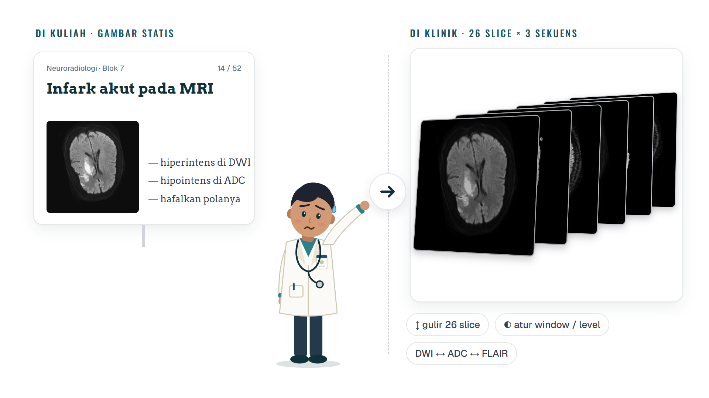
Dika di bangku kuliah menatap slide berisi satu gambar statis; kamera geser ke kanan, gambar itu pecah jadi tumpukan puluhan slice 3D yang berputar; Dika berkeringat.
“Ini Dika, mahasiswa koas. Di kuliah, ia belajar membaca MRI dari potongan gambar statis. Padahal di klinik, MRI itu puluhan slice yang harus digulir, diatur kontrasnya, dan dibandingkan antar sekuens.”
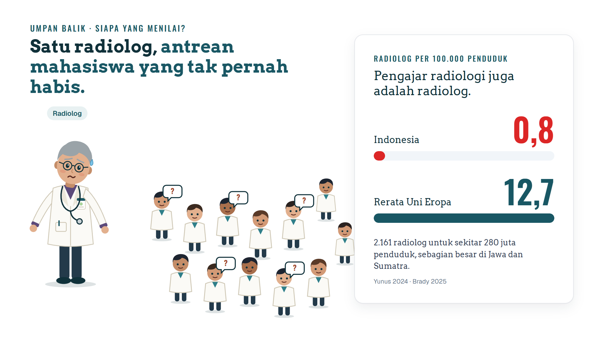
Satu radiolog (karakter) dikerumuni antrean mahasiswa yang terus memanjang; panel kanan: batang 0,8 vs 12,7 radiolog per 100.000.
“Yang bisa memberi umpan balik adalah radiolog. Tapi Indonesia hanya punya sekitar nol koma delapan radiolog per seratus ribu penduduk. Rerata Uni Eropa? Dua belas koma tujuh.”
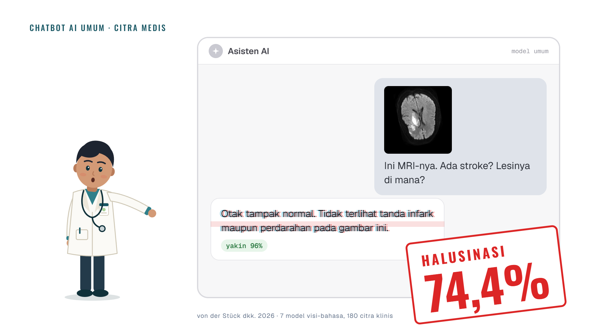
Dika mengetik ke chatbot generik; jawaban mengalir penuh percaya diri lalu glitch merah; stempel "halusinasi 74,4%".
“Jadi mahasiswa lari ke chatbot AI. Masalahnya, untuk citra medis, chatbot umum sering salah dengan sangat yakin. Satu evaluasi mencatat tingkat halusinasi sampai tujuh puluh empat persen.”
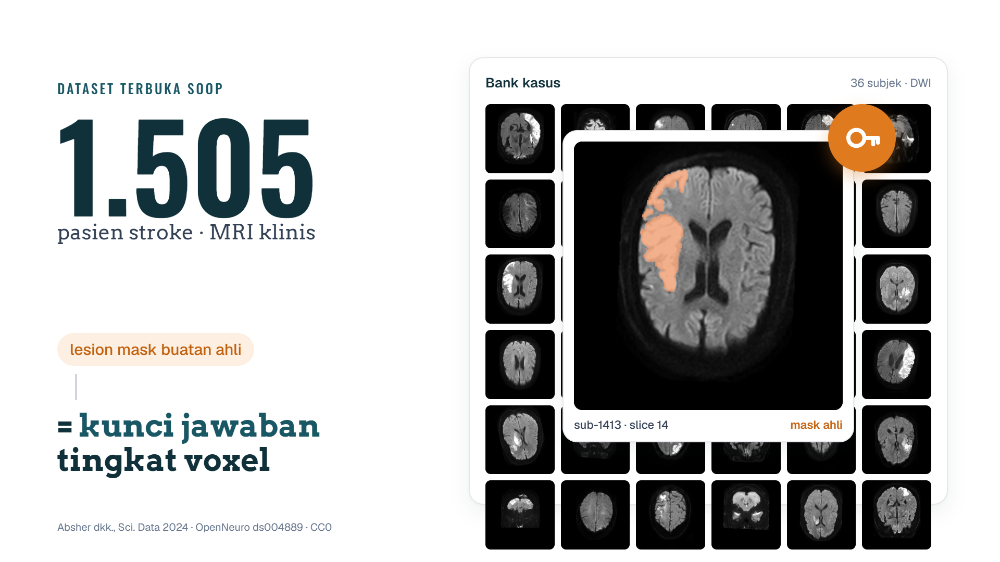
Dinding ubin MRI berhitung sampai 1.505 pasien; kamera masuk ke satu ubin; lesion mask oranye melukis dirinya; ikon kunci berputar masuk.
“Tapi ada peluang. Dataset terbuka SOOP berisi MRI dari seribu lima ratus lima pasien stroke, lengkap dengan lesion mask buatan ahli. Untuk setiap kasus, kita tahu persis jaringan mana yang infark. Itu kunci jawaban.”
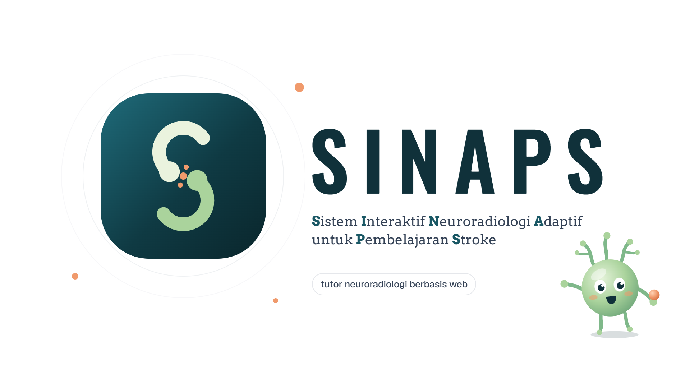
Dua ujung neuron tumbuh dan bertemu membentuk huruf S logo; tiga butir oranye meletup; wordmark SINAPS + kepanjangannya; Sina melompat keluar dari logo dan melambai.
“Dari kunci jawaban itu, kami membangun SINAPS: tutor neuroradiologi tempat mahasiswa berlatih membaca MRI stroke sendiri, dinilai secara objektif, dan dibimbing AI yang tidak mengarang.”
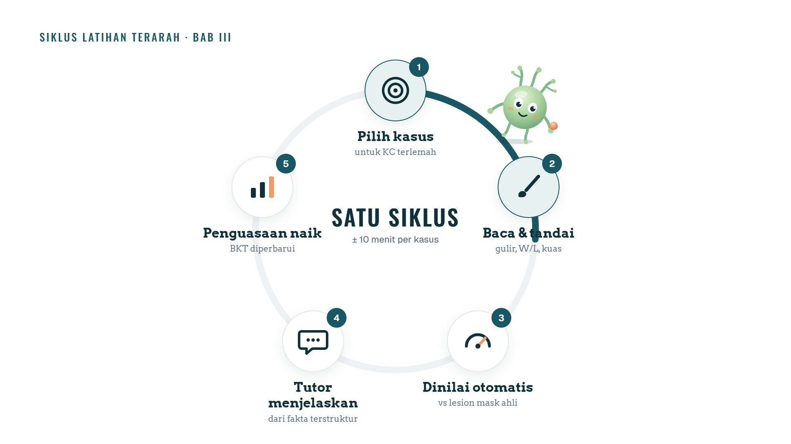
Lingkaran lima stasiun (pilih kasus → baca & tandai → dinilai → tutor menjelaskan → penguasaan diperbarui); Sina berlari mengikuti lingkaran sebagai sinyal, tiap stasiun menyala saat dilewati.
“Kenalan dulu dengan Sina. Di SINAPS, latihan berjalan dalam satu siklus. Sistem memilih kasus untuk kompetensi terlemahmu. Kamu membaca MRI dan menandai lesi. Jawabanmu dinilai otomatis, tutor menjelaskan, lalu penguasaanmu diperbarui.”
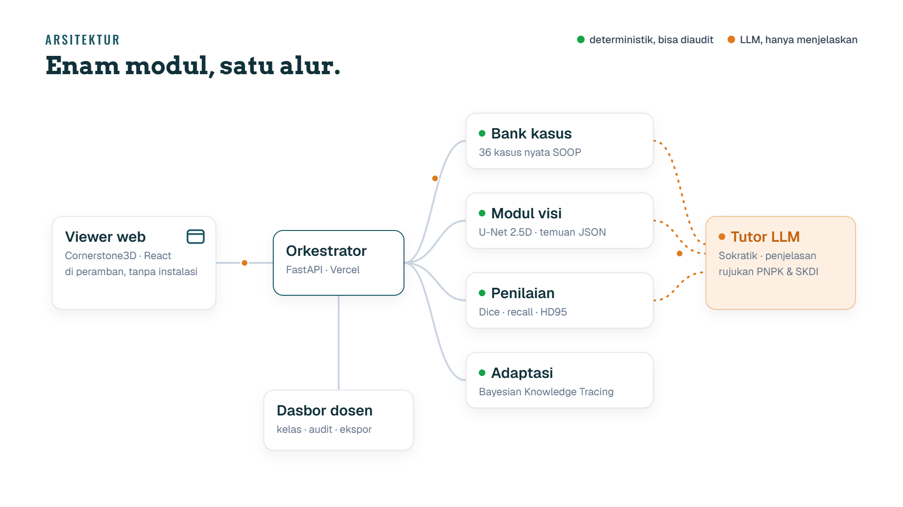
Diagram arsitektur dibangun: Viewer (Cornerstone3D) → Orkestrator FastAPI → Bank kasus, Modul visi (U-Net 2.5D), Penilaian, Adaptasi (BKT) → Tutor LLM; Dasbor dosen di samping. Paket data berjalan di garis.
“Di balik layar ada enam modul. Viewer berbasis Cornerstone3D berjalan langsung di peramban. Semua permintaan lewat orkestrator FastAPI. Di belakangnya ada bank kasus, modul visi dengan U-Net dua koma lima D, modul penilaian, dan modul adaptasi berbasis Bayesian Knowledge Tracing. Dosen memantau semuanya lewat dasbor.”
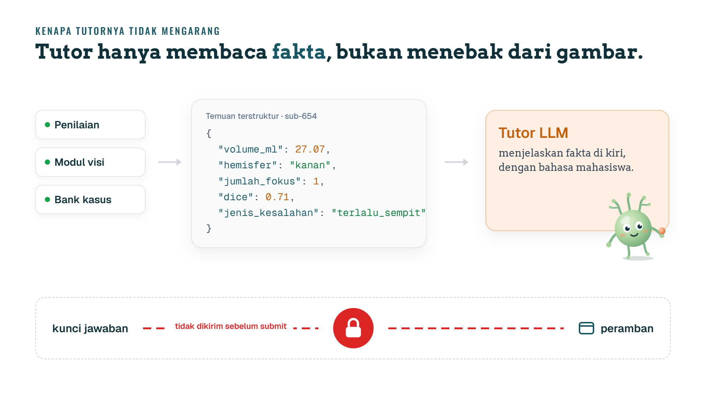
Modul hijau (deterministik) mengeluarkan kartu JSON fakta; tutor LLM oranye hanya bisa membaca kartu itu; gembok menutup di jalur kunci jawaban ke peramban.
“Kuncinya di sini. Tutor LLM ada di ujung rantai. Ia hanya menerima fakta terstruktur dari modul lain, dan kunci jawaban tidak pernah dikirim ke peramban sebelum kamu submit.”
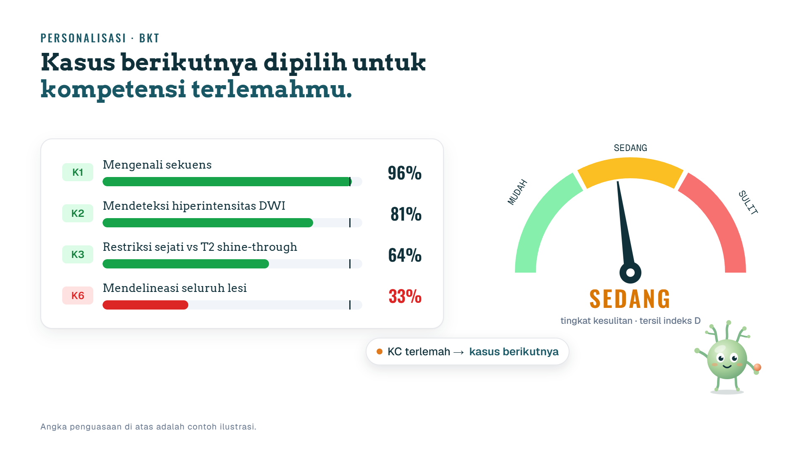
Batang penguasaan K1, K2, K3, K6 naik-turun; panah memilih yang terendah; dial tingkat kesulitan mudah/sedang/sulit berputar ke "sedang".
“Setiap jawaban memperbarui estimasi penguasaanmu per kompetensi. Kasus berikutnya dipilih untuk yang paling lemah, dengan tingkat kesulitan yang pas.”
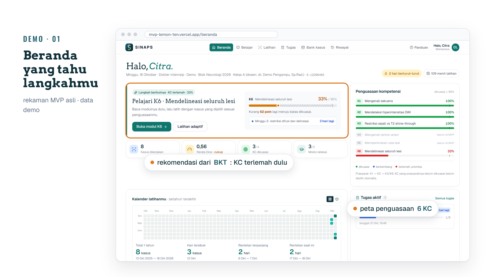
Rekaman asli halaman Beranda di jendela peramban yang melayang; callout "Langkah berikutnya: KC terlemah".
“Sekarang lihat langsung. Begitu masuk, SINAPS sudah menyarankan langkah berikutnya.”
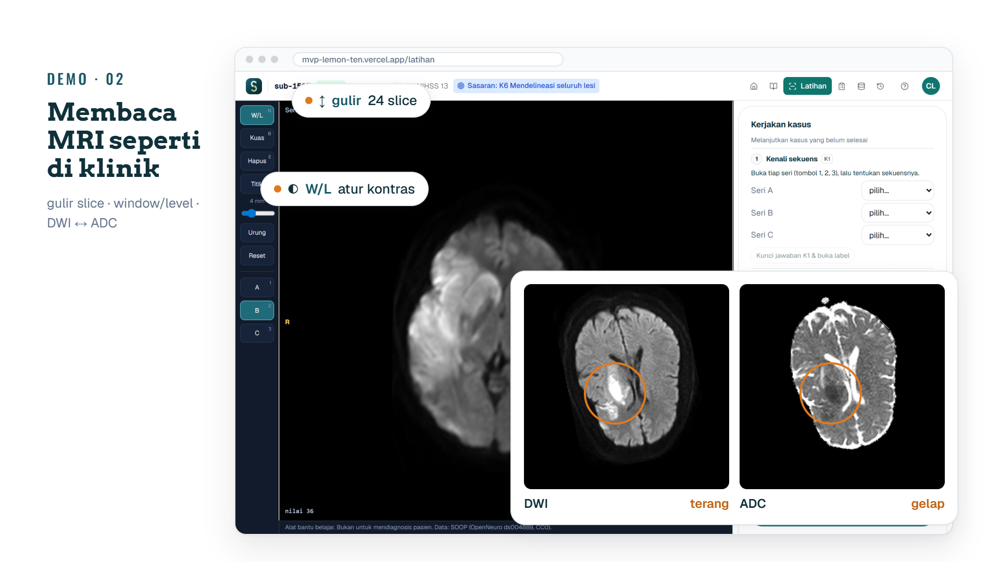
Rekaman asli viewer: scroll slice, window/level, DWI vs ADC; zoom ke lesi; label "terang di DWI / gelap di ADC".
“Di viewer, Dika menggulir slice, mengatur window level, dan membandingkan DWI dengan peta ADC. Infark akut tampak terang di DWI, dan gelap di ADC.”
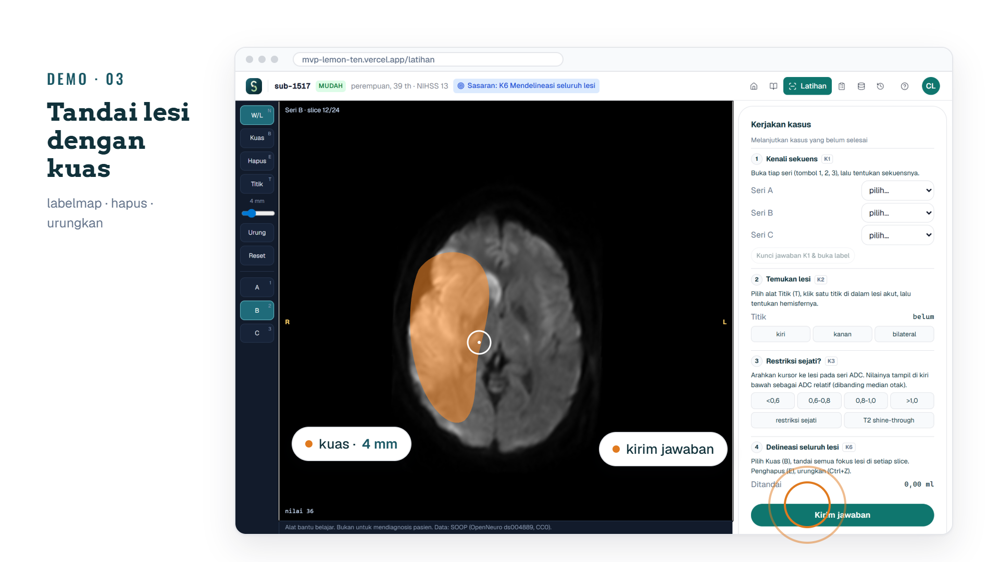
Rekaman asli kuas labelmap mengecat lesi; ripple pada tombol Submit.
“Lalu ia menandai lesi dengan kuas, langsung di atas citra, dan menekan submit.”
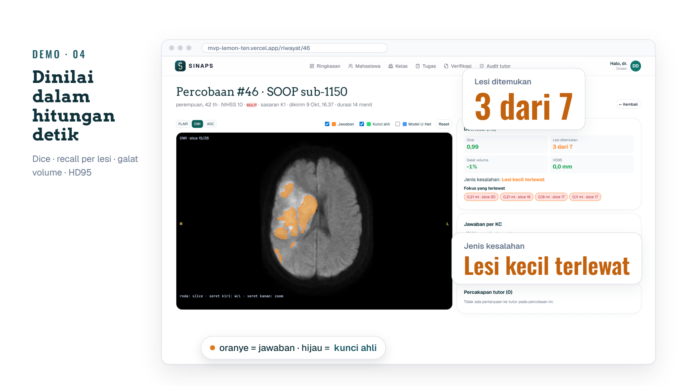
Rekaman asli kartu hasil; angka Dice/recall/galat volume diperbesar dengan callout; overlay kunci vs jawaban; label jenis kesalahan.
“Dalam hitungan detik, skornya keluar: Dice, recall per lesi, galat volume, dan jenis kesalahannya.”
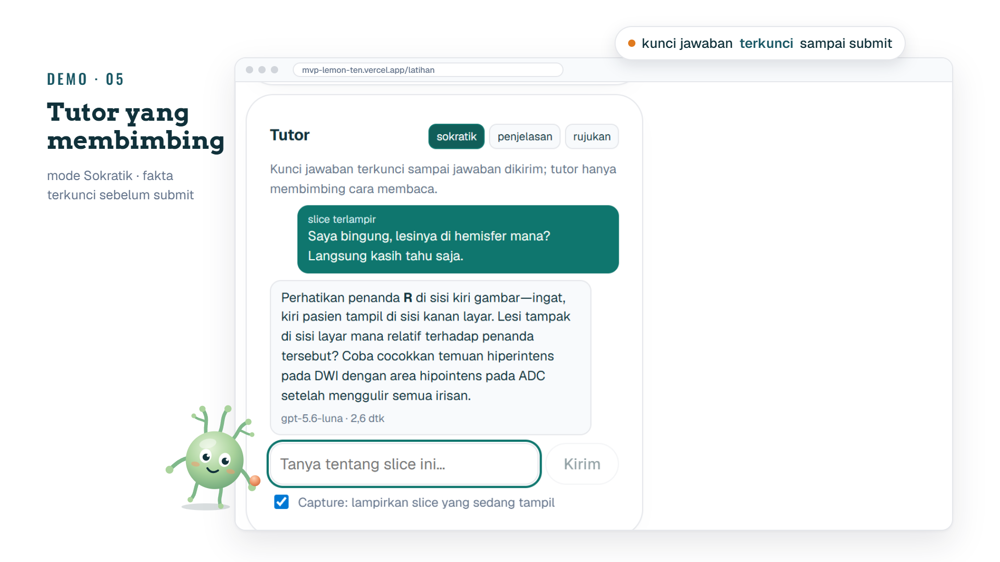
Rekaman asli panel tutor; pertanyaan diketik, jawaban streaming; Sina mengintip dari pojok dengan butir oranye.
“Dika bertanya ke tutor. Dalam mode Sokratik, tutor tidak langsung memberi jawaban. Ia membimbing dengan pertanyaan, berpijak pada temuan kasus ini.”
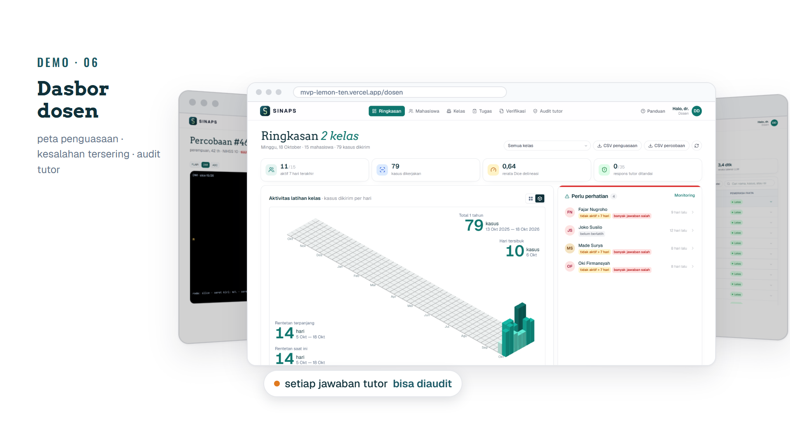
Rekaman asli dasbor dosen: ringkasan kelas → peta penguasaan → audit tutor; kartu bergeser seperti carousel.
“Di sisi dosen, ada peta penguasaan tiap mahasiswa, kesalahan yang paling sering muncul, dan audit setiap jawaban tutor.”
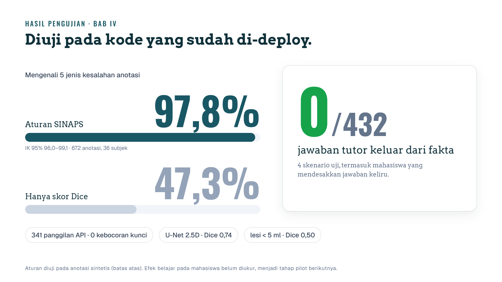
Dua angka besar: 97,8% vs 47,3% (aturan jenis kesalahan vs Dice saja), lalu 0/432 jawaban tutor di luar fakta, 341 panggilan API tanpa kebocoran. Catatan jujur kecil: angka dari anotasi sintetis; efek belajar belum diukur.
“Hasilnya? Modul penilaian mengenali jenis kesalahan dengan akurasi sembilan puluh tujuh koma delapan persen, dibanding empat puluh tujuh persen kalau hanya memakai Dice. Dan dari empat ratus tiga puluh dua jawaban tutor, tidak satu pun keluar dari fakta.”
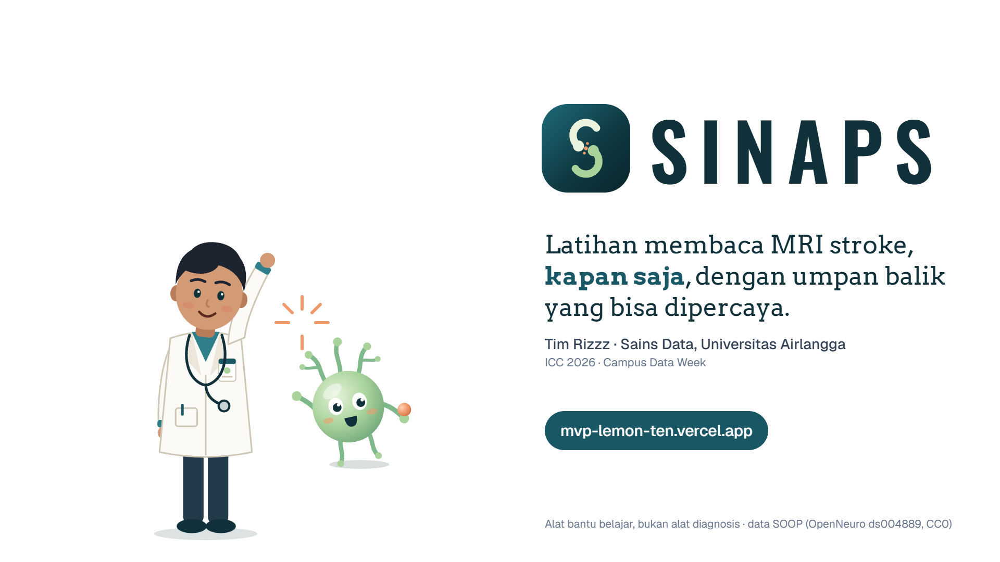
Dika kini yakin, tos dengan Sina; logo SINAPS, "Tim Rizzz — Sains Data, Universitas Airlangga", tautan mvp-lemon-ten.vercel.app, catatan "alat bantu belajar, bukan alat diagnosis".
“SINAPS. Latihan membaca MRI stroke, kapan saja, dengan umpan balik yang bisa dipercaya.”